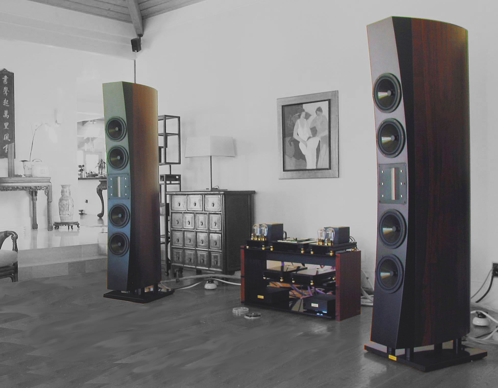

Wing Speaker System
In my experience as an audiophile and constructor it has often happened that a feeling of a classy sound stayed with me for a very long time. It involved almost unlimited dynamics of “horn“ speakers, smoothness and liquidity of 300B triode, transparency of a speaker ribbon, the thump of bass of a solid state “power plant”, the 3 dimensional sound stage of Italian masters speakers and coherency of vinyl. In reality, almost each hi-end system I have auditioned always has some unique feature, making one kind of music aspect sound excellent but leaving others not quite up to the mark. It has always been my goal to make a music system that would easily reflect music in an unimpeded manner by simply melting all the best features of different sound systems into one. After many years of searching and testing, thanks to the contribution of a very friendly jazz percussionist and businessman ( mr. John Tu, owner of Kigston Technology ) the dream eventually came true. The Wing Speaker System came into being.
Reaching the level of 120 dB (which the conductor hears at the pulpit) requires the speakers of very high efficiency or very powerful amplifiers. Both were applied while building the system. The bass sound is reproduced by 1200 Watts being fed from 8 solid state amps. The remaining frequency band in the range between 650 Hz and 35KHz is covered by a unique ribbon speaker – RAVEN 3.2 MMX of very high efficiency. It was possible due to powerful magnets NeFeB. The weight of the ribbon speaker is 18 kg. The total efficiency of the Wing Speaker is 100dB/W/m
Thump and speed is made by silver grand valve mono amplifiers, solid state amps as well as the application of appropriate speaker drivers. Eton bass drivers have got very stiff but light Kevlar and Nomex membrane of honeycomb structure. A great number of speaker cones of great total area are characterized by fast and linear work even at very high sound levels.
A remarkably great number of details are provided by excellent Lektor Grand SE, a consecutive version of one of the world best CD players. Another element in the line of sound reproduction is Silver Grand Mono with its internal silver wiring, teflon insulation and capacitors. The ultra-light ribbon of Raven 3.2 MMX (only 35 mg in weight) conveys every minute detail without any loss.
Reproduction of the acoustics and focusing of musical instruments are the result of the perfect harmony of the system. What matters most is the build and architecture of the Wing Speaker thanks to its slim shape that eliminates diffraction and concave front panel responsible for providing a time coherent sound.
The lack of coloration is due to applying a ribbon which, in fact, is a point source of sound for the majority of the acoustic band starting to work up 650Hz. It is noteworthy that all area that human ear is most sensitive to is covered by one ultra light vibrating element.
The speed of sound attack important as well as its fast reverberation. It is stimulated by the wing-like construction of the Wing Speaker making the most stiff and closed forms ever. The speaker cabinet skeleton is made of marine-grade plywood, one inch side walls are glued from sheets of Superform tin plywood.
Ancient Audio belongs to a very exquisite club of complete music system
manufacturers. The whole system consists of extraordinary sound
reproducing units, which are ideally harmonized one another. The overall
synergy of the CD player, amplifiers and speakers creates a harmonious
unity which creates an illusion of true-to-life music.
In order to make the most of the drivers and amplifiers, crossovers
are placed before amplifiers: the passive LC for mid/high band and the
active one for low. The amps working band is optimized for a particular
bandwidth.
The Wing Speaker System has been designed for an area of about 100 square
meters. It is sold exclusively as a complete system: Speakers, amplifiers,
CD player, cables, power cords and is mounted by the founders of Ancient
Audio. The price includes acoustics adaptation project.
The success of the Wing Speaker System made it possible to design a
smaller version, but equally uncompromising. The Wing Speaker System is
too big (2 m in height and 200 liters volume) for average European or
Asian living conditions. This is the reason why Ancient Audio have made a
Little Wing Speaker with a single woofer/solid state amp and raven 3.2 MMX
retaining all the features of the uncompromising construction. The Little
Wing Speaker System is delivered with the same amps, CD player and cabling
as the bigger one.